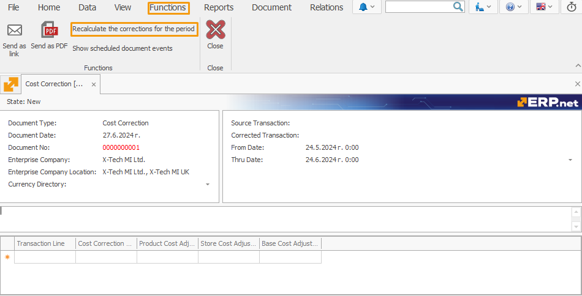
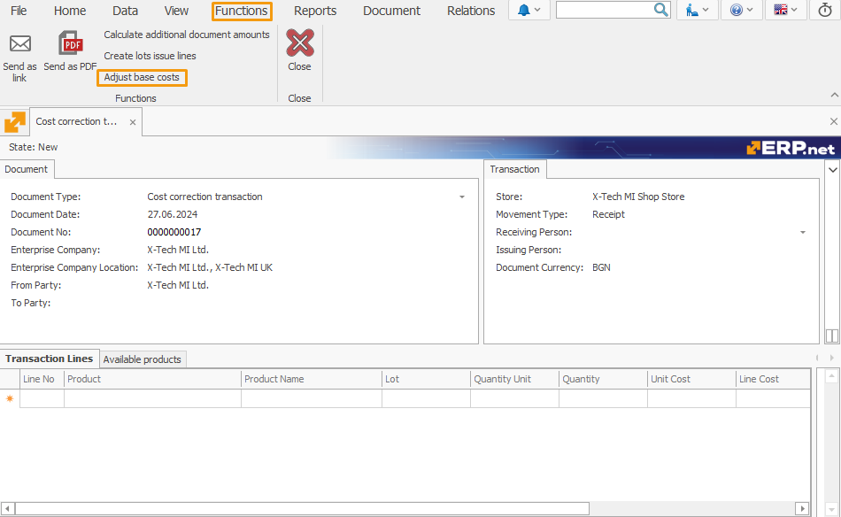
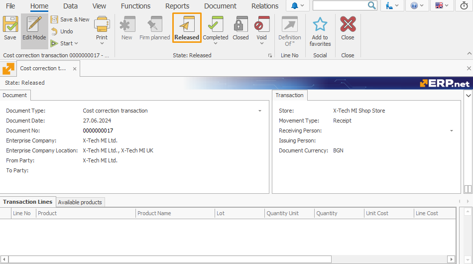

Adjusted Base Cost
The Adjusted Base Cost feature is responsible for aligning the Original Cost of store products with their often-adjusted Base Cost.
It achieves this by simultaneously deducting the Base Cost Adjustment of every product and adding it to its associated Line Base Cost
This speeds up the process of processing transactions, allowing them to assume the correct (or most correct) base costs of products.
It also limits the need to make frequent cost corrections due to accummulated discrepancies between original and base cost calculations.
Using Adjusted Base Cost
Here, you'll find detailed steps on how to effectively perform base cost adjustment.
1. Create a Cost Correction document
You first need to create a cost correction responsible for adjusting your stores' costs over a specified period.
This is typically done once every month.

Fill in the from and thru date of the period and click Save.
Then, navigate to the Functions tab and select Recalculate corrections for the period.

Once prepared, Release the document.
2. Add a new document type
The next step is creating a special document of type Cost Correction.
Its purpose is to generate a cost correction for the actual costs of the current cost correction transaction.
3. Create a Cost correction transaction
Start creating a cost correction transaction using the document type you've created.
Required fields are:
- Store - the store for which the transaction will be issued
- Movement Type - set as Receipt
- Document Currency - main currency of the enterprise company
- Cost Source - source of the document, set automatically; after the function is applied, it changes to Adjustment.

4. Apply the function
Save the document, navigate to Functions and select Adjust base costs.

The function will load all products (with 0 quantities) from the selected store whose base costs are different from their original line costs.
It is only after releasing this transaction that it will match their current base costs with their adjusted costs.
Values added to the Line Base Cost will be simultaneously subtracted from the Base Cost Adjustment.

Note
Following a recent application of the function, transactions will now assume the correct (or most correct) base costs of products.